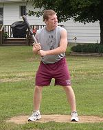
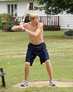
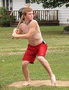
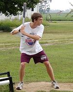

 Daniel Midgett made his Chair Baseball debut on Saturday with a 1-for-12 effort. Midgett tripled in the 7th inning, but was stranded. |
 Patrick Cork broke out of his slump on Saturday with a 5-for-11 game, including a homerun and 3 RBI. Cork finished the year batting .368 with 25 homers and 52 RBI. |
 Robert Trimble had a great day at the plate going 6-for-11 with a double and a triple to raise his season average to .328. | ||
 Jacob Midgett debuted with a 3-for-12 day. Like the rest of his team, Midgett was left stranded all three occasions in the shutout. |
Tony Cork threw yet another gem to finish off one of the best pitching seasons in league history. Cork threw 8+ scoreless innings to pick up the win and move to 7-0 on the year with a 1.67 ERA (10 earned runs in 54 innings). |
 Nate Owens had just two hits in 11 at bats, but they busted the game open in the 5th inning. Owens singled and later tripled to score himself in the inning for the game's first runs. | ||
|
After Tony Cork allowed two ninth inning singles, Patrick Cork came on to retire the final 3 batters for his 4th save of the year. Cork allowed just 2 earned runs in 20 innings this year for a 0.90 ERA. |
||||
Back to Baseball